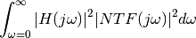

Functions in this module are accessed by importing pydsm and looking in the pydsm.NTFdesign module.
This module provides some functions for the design of the Noise Transfer Function of ΔΣ modulators. There are both functions that are specific to PyDSM and entry points to functions in the delsig module of PyDSM.
This modules provides code for the synthesis of the modulator NTF, based on the routines in the DELSIG toolkit by R. Schreier.
Synthesizes a noise transfer function for a delta-sigma modulator.
| Parameters : | order : int, optional
osr : float, optional
opt : int or list of floats, optional
H_inf : real, optional
f0 : real, optional
|
|---|---|
| Returns : | ntf : tuple
|
| Raises : | ValueError :
|
| Warns : | PyDsmWarning :
|
Notes
This is actually a wrapper function which calls the appropriate version of synthesizeNTF, based on the control flag optimize_NTF which determines whether to use optimization tools.
Parameter H_inf is used to enforce the Lee stability criterion.
This modules provides code for the synthesis of the modulator NTF, based on the filter placed after the modulator for the removal of the quantization noise.
The algorithms used in these routines are extensively described in
Sergio Callegari, Federico Bizzarri “Output Filter Aware Optimization of the Noise Shaping Properties of ΔΣ Modulators via Semi-Definite Programming”, IEEE Transactions on Circuits and Systems I: Regular Papers.
Key functions
Synthesize a FIR NTF based on the ΔΣ modulator output filter.
The ΔΣ modulator NTF is designed after the impulse response of the filter in charge of removing the quantization noise
| Parameters : | order : int
h_ir : array_like of reals
H_inf : real, optional
normalize : string or real, optional
options : dict, optional
|
|---|---|
| Returns : | ntf : ndarray
|
Auxiliary Functions
Synthesize a FIR NTF from quadratic form defining quantization noise gain.
| Parameters : | q0 : array_like
H_inf : real, optional
normalize : string or real, optional
options : dict, optional
|
|---|---|
| Returns : | ntf : ndarray
|
Computes Q matrix from the output filter impulse response
| Parameters : | h_ir : array_like
P : int
|
|---|---|
| Returns : | q0 : ndarray
|
Notes
The Q matrix being synthesized has (P+1) times (P+1) entries.
Computes the quantization noise power gain
| Parameters : | NTF : tuple
H : tuple
|
|---|---|
| Returns : | a : real
|
Notes
The computation is practiced as
